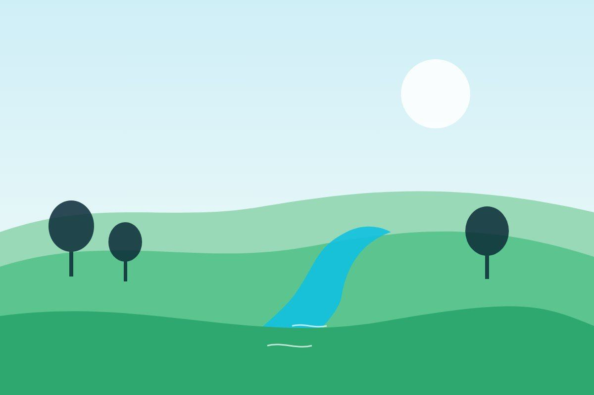

Regulation
IEE or EIA: which one does your project need?
The category your project falls in decides the scope, the cost and the time.
Clear explainers from our team on the topics we work on every day.
The category your project falls in decides the scope, the cost and the time.

An effluent treatment plant protects rivers and communities and keeps your clearance valid.

The steps are easier when you know them in advance, and renewal needs attention too.

A plan that sets out who does what to limit impacts, and how it will be checked.

Putting data on a map shows where things happen and makes findings easy to check.

Satellites record the same place again and again, so change can be measured.

Hazard, exposure and vulnerability are combined to show which areas need attention first.

Indices such as SPI and SPEI turn long rainfall and temperature records into a drought signal.

A sampling plan decides whether your results can be trusted.

Start with a clear boundary and good data, then choose a reporting framework.

Start from data you can get, keep the question narrow and agree the plan early.

A thesis is not yet a paper. Here is how to turn one into the other.
Need our company profile or a sample report outline? Ask us and we will send it.
Send a short description of what you need. We reply within one working day, usually with questions and a rough plan.